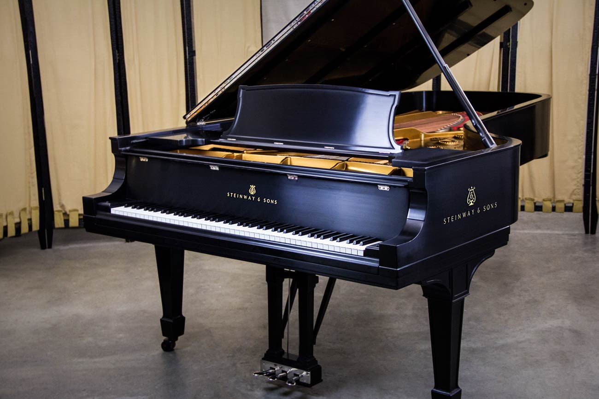
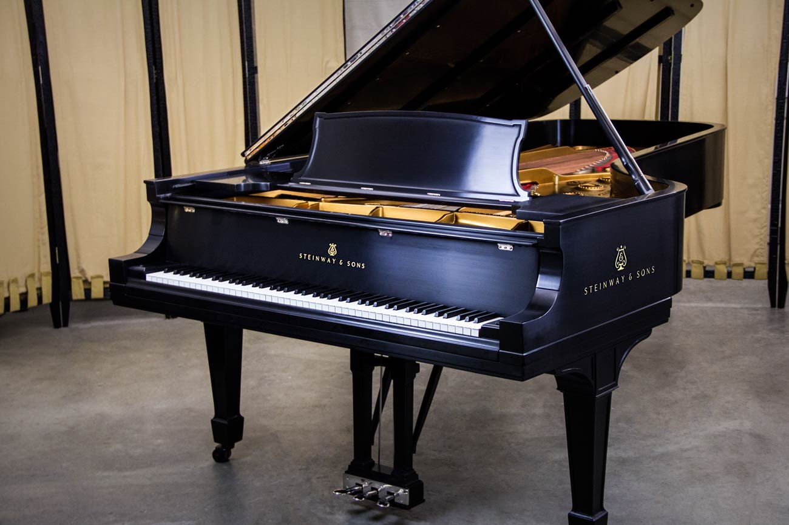

My favorite things to do

 

I love to jog and that is because
- I want to become a fast runner.
- I could participate in 5k runs.
- I could race my friends.
I love to read and that is because
- It makes me become smarter
- I like to read the news
- I find difficult and interesting words
I love to play video games and that is because
- I can play with a lot of friends
- Helps with hand-eye coordination
- My favorite video game is Minecraft
I love to listen to music and that is because
- It helps me focus on anything I am doing like chores or reading.
- My favorite artist to listen to is Alan Walker.
- It gives me more interest in playing instruments in music.
I love to play piano and that is because
- When I play music it helps me calm down in a situation when I am nervous or angry.
- I like to perform for friends and family.
- I could communicate with other musicians and start a music band.